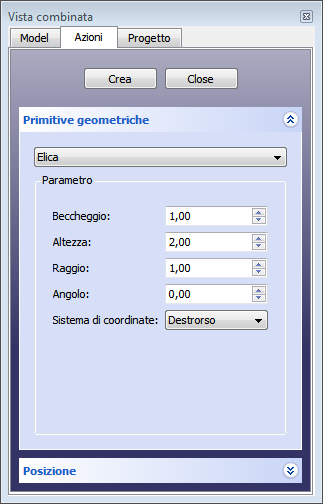
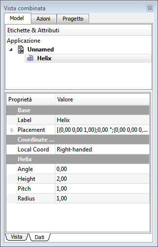

|
| Posizione nel menu |
|---|
| Parte → Crea primitive → Elica |
| Ambiente |
| Parte, OpenSCAD |
| Avvio veloce |
| Nessuno |
| Vedere anche |
| .. |
Crea un curva parametrica a forma di elica.
Utilizzare il menu  Crea primitive... → Elica. Si apre una finestra di dialogo che consente di impostare:
Crea primitive... → Elica. Si apre una finestra di dialogo che consente di impostare:
Il dialogo Crea Primitive è accessibile tramite l'icona Crea Primitive  del menu Part o della barra degli Strumenti Part, dell'ambiente Part. Un uso comune dell'elica è per creare le filettature con operazioni di sweep.
del menu Part o della barra degli Strumenti Part, dell'ambiente Part. Un uso comune dell'elica è per creare le filettature con operazioni di sweep.
Utilizzo
Primitive Geometriche
|  |
Elica Parametri
PosizioneEspandere la voce Posizione per stabilire:
I parametri e il posizionamento sono modificabili tramite la scheda delle proprietà. |
{kind=link}
Opzioni
Proprietà
|  |
VistaSono disponibili le Proprietà standard di visualizzazione. DatiBase
Coordinate ...
Helix
|
{kind=link}